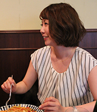

セールスリーダー: Hashimoto Arika
- 出社
-
メールチェックや各タスクの進捗確認また、その日のスケジュールを確認します。
- 社内の打ち合わせ
- 各営業の1日の動き・全体の報告事項共有を行います。
- お客様対応及びコーディネーター業務
- 現在就業頂いている技術者様のフォローアップ対応やお客様からの問い合わせに対して対応。
マッチングから面談のセッティングまで行います。
- 昼休憩
- 毎週金曜日はITS事業部全体でご飯に行きます。
色んな話をしながら美味しいご飯を食べるのが楽しみの1つです。


- お客様との打ち合わせ
- パートナー会社様と打ち合わせを行います。
- 1日のメールや対応の整理を行う
- 次の商談や打ち合わせにむけて、施策を考え資料を作ります。
煮詰まった時は課のメンバーに相談しながら進めます。
- 業務終了 帰宅
-
- ノマドタイム
-
カフェで最新技術情報のチェック。
日々進化する技術の最新情報をかき集めます。
- 業務開始
- メールをチェックしてから、タスクの整理を行った上で優先順位の高いシステム改修・構築作業を進めていきます。
- デイリー業務
- 集中力が高いAM中にデイリーの作業を効率良く終わらせちゃいます。
- 昼休憩
- ランチタイムと少しずらした昼食を頂きます。
週4ざるそば！週1油そば！
- 業務再開
- 新規の要件を固める為に社内MTGを行ったり、資料作成を行っていきます。
- ちょいと休憩
-
エンジンが切れ始めるので、技術者必須のDr P*p*erでギアあげます。
因みに、アメリカで一番古い炭酸飲料らしいですよ。
- 退社
-
余裕があれば技術の自主勉強。
誰にも強制されてないので疲れてる時は直帰して、YouTubeあさってます。
- 出社
-
メール確認、今日の作業をチェックし準備。手順書等、必要な資料を印刷し作業準備へ。
- 作業スタート
- 作業スタート。サーバーを触るのでマシンを間違えないように声を出しながらチェックしていきます。
- 昼休憩
- 肉系弁当をがっつきます！午後眠くならないように。。
- 作業再開
- 午前からの続き。作業中は集中力を高めるために適度に休憩をとりながら取り掛かります。
このタイミングで構築会議を行うこともあります。
- 帰宅
-
自社の報告資料を作ったり、今日覚えた内容を復習したりします。
終わったら趣味や友達と遊びに行ったりするのも必要ですね！

Hashimoto Arika
ITソリューション事業部
セールスリーダー
入社を決めた理由は？
一言でいうと<理念共感>です。
私は前職から代表の石川と一緒に働いており、代表の会社への思いや理念に感銘を受けました。
LEにジョインできることに心がワクワクした感覚は今でも忘れられません。
ここで人生を謳歌したいと思い自ら入社を志願しました。
現在の仕事内容は？
セールスリーダーとして営業は勿論、部下のマネジメントを行っております。
エンジニアの方々が良き就業場所に参画でき、参画後も気持ちよく働けるようサポートをしております。
これから目標は？
営業のプロフェッショナルになる事多くの人と出会い、
人生の一部(仕事)をサポートし続けたいです。
あなたの座右の銘は？
「今、この瞬間を全力で楽しむ」
その時その瞬間を大切に生きるそして出会う人々との時間を大切にする
なぜIT業界に？
当時は「ライブエストで働きたい」という思いだけだったので、
業種や業務内容にあまりこだわりはありませんでした。
気が付けばIT業界に飛び込んでました。
世の中の基盤を支え発展の著しいIT業界で働けていることにやりがいを感じております。

Suzuki Masataka
テクニカルソリューション事業部
事業部長
入社を決めた理由は？
友人の話が決め手でした！
実は友人（友人T）がライブエストで既に働いていて、
よく飲んだりしていたんですが、当時20半ばの飲みなんで会社の愚痴…とか、疲れた…などなど。
周りが話してた時友人Tの口からはそんな話聞かなくて、会社をこうしたいだとか前向きな話ばっかで…。
そんなの見せられたらねー！？笑
てことで、石川社長と直接飲む機会を設けてもらって、社長本人と飲んで語って…。
気づいたら、今に至る訳です。笑
現在の仕事内容は？
現在は社内で自社サービスや受託したHPの制作を行っています。
まだまだ社内での開発は駆け出しで右も左も分からない状態なので試行錯誤の日々です。
でも辛い分やり甲斐は十分あります。
自分の考えを上に伝えられる環境があるし、それが間違っていたら正してくれる環境が確かにあります。
日々下駄を履いて、精進できる仕事です！
これから目標は？
まずはライブエストの代名詞となるシステムの構築。
そして、自分を含め全員がいろんな技術に触れられる環境。学べる環境の基盤構築です。
あなたの座右の銘は？
『他人は自分を映す鏡』
なぜIT業界に？
ライブエストに入社する前は飲食業界で働いていました。
接客は楽しかったんですが、私は昔からモノづくりに興味があり
生涯でしっかり形に残るモノを作れる技術が欲しいなと考えていました。
そこで、ノンスキルの自分でも自主学習だけで技術を身につけられるIT業界を選択しました。
5年目となった今でも会社が支給してくれる参考書を読んで、日々精進出来る充実した日々を過ごせています。
本当にこの業界を選択して良かったです！

Shida Chihiro
テクニカルソリューション事業部
エンジニア
入社を決めた理由は？
正直な話をすると、直感です。
石川社長と面接をした際に、
この会社だと色んなことにチャレンジが出来そうと感じましたし
人として成長が出来るのではないかと思いました。
それと、この会社でずっと働いていきたいなと、
その時純粋に思ったので入社を決めました。
現在の仕事内容は？
現在はお客様先で、SEサポート業務を主にやっています。
色んなことをやっていますが、ざっくりいうと
請求書のチェックや回線使用率をまとめたり、グラフにしたりして
SEの方が仕事に集中しやすいようにサポートをしています。
これから目標は？
現在、事務的なことを主にやっているので
これを活かせる仕事をしていきたいと思っています。
女性はエンジニアより事務関係のお仕事を探している人も多いと思うので
事務関係に特化したチームを作っていけたら面白いかなと思っています。
その為に、MOSや簿記などの資格を取得をし、
いずれは未経験の方たちに教えていけるようにしたいと思っています。
あなたの座右の銘は？
そこで諦めたら試合終了だよ。という有名な台詞がありますが強い意志をもって、
諦めずに苦労や困難にもくじけなければ必ず目標は達成できると信じています。
なぜIT業界に？
前職はアパレル企業で接客の仕事をしていたので、全く業種は違ったのですが年齢を重ねても続けていける仕事、
また、IT業界はこの先将来性があると思いこの業界に興味を持ちました。
あとは、単純に電化製品が好き、ゲームが好きというのも１つの理由です。

Tarukawa Shouta
テクニカルソリューション事業部
エンジニア
入社を決めた理由は？
LEならいい意味でやりたい放題できる。と感じたのが大きな要因です。
石川代表と面接をしてる際に言われた
「やりたいことは一緒にやろうよ。」
「将来やりたいことは？」
「今、君は知識も何もいらない。これから学んで、力がついたら一緒になにかやろう。
その時はどんどんアイデアだしてよ！ITだけでやっていく気ないし！」
この言葉に驚きました。
ここまで社員の意見を汲んでくれて、応援してくれる代表はそうそう居ません。
一度きりの人生、平凡に生きるのが嫌だった。私には最高の言葉でした。
現在の仕事内容は？-
お客様の会社で新卒採用支援システムの運用・データベースの運用業務がメインです。
これから目標は？-
現在はwebデザインに興味があり、将来的にはUI・UXデザインまで手がけれるようになりたいです。
あなたの座右の銘は？
「好奇心だらけの人生」
様々な事に興味を持つ事で話の幅が広がるし、自分の知らない世界・思想を肌で感じれます。
私はwhy？で常に頭の中がいっぱいです。
なので毎日1つは気になったことを調べて
それについて考えたりしてます。（まるで厚切りジェイ○ンですね）
最近で言うと、なぜ「女子はパンケーキが大好きなのか。」
これについて熱く語れる方を募集しております。
なぜIT業界に？
元々、webデザインに興味があり、自分で作ったものが世の中に出るのはカッコいい！！
頭が悪くてもITなら努力次第で稼げる！と稚拙な考えでIT業界を志望しました。
算数・数学が苦手でしたので不安は大きかったですが苦手意識を無くし、
正面から立ち向かえば文系の人間でもIT業界で戦っていけると感じました。